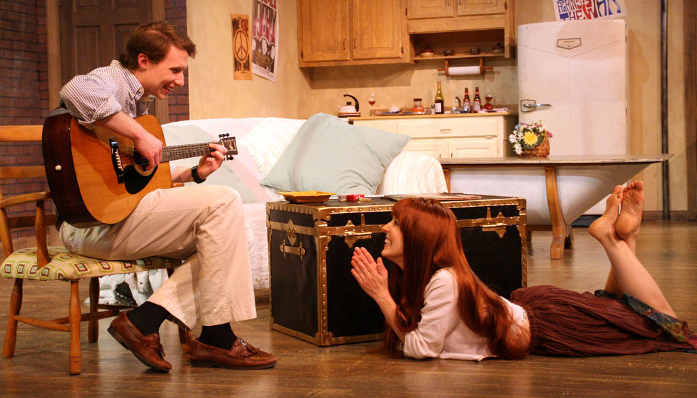

About Stage Door Players
Stage Door Players was founded in 1974 as a Community Improvement Project of the Dunwoody Woman’s Club. The community theatre performed in various locations until 1988, when a permanent home was realized in the North DeKalb Cultural Center.
Fast forward to 2006. Dunwoody is the major axis of North Atlanta. It is a hub of industry, business, shopping, great restaurants, and is a thriving cultural and artistic center. Stage Door Players has grown and evolved with its community. Today Stage Door Players is a fully professional theatre, producing a full season of popular, compelling and entertaining works.
This transition, completed in 2004, has made Stage Door Players a successful player in the Atlanta theatre scene. Hired in 2004 as part-time Artistic Director, Robert Egizio became the full-time director in 2005. His professionalism, creativity and reputation in Atlanta’s theatre community has brought Stage Door Players to a new level of recognition and brought new audiences to its doors, and has brought a new level of creativity as well as new talent to the company.
Stage Door Players produces a full season of professional theatre, the Stage Door Canteen cabaret series, and launched Stage Door Jr. in February 2006, a special series of Saturday productions for children. These shows are both educational and entertaining for young audiences and their adult guests.
Stage Door Players is dedicated to bringing a professional level of live theatre to the Greater Metropolitan Atlanta area. We will always place emphasis on the quality and professionalism of our productions, while at the same time continue to educate and expand the theatrical knowledge and experience of both our audiences and our talent. We are committed to serving the entire community and to continually developing new theatre-going audiences.
Board
Jim Redovian
Board Chair
Jim and his Wife Sherrill have been married 46 years and have been Dunwoody residents for thirty four years. They have six children and eleven grandchildren. Jim owns Atlantic southern Products, Inc., is a board member for the Dunwoody Homeowners Association and for the Cowart Family/Ashford Dunwoody YMCA. Jim is a deacon at Dunwoody Baptist Church, and works with the youth at both Dunwoody Baptist as well as Dunwoody United Methodist Church. Jim served four years on the DeKalb County Board of Education.
Dan Womack
Treasurer
Dan Womack has been a practicing accountant since 1975 and founded his certified public accounting firm, Womack & Company in 1988. He joined the board of Dunwoody Stage Door Players in 1989 and served as Treasurer from 1990 until 2006. His 2-year position as Board Chair begins in 2007. In addition to his business interests, Dan enjoys music and playing bass guitar. His band, Old Men in the Basement, play classic rock and roll of the 60’s, 70’s and 80’s and make occasional appearances around the Atlanta area.

Christy Baggett
Operations Chair
Christy Baggett has been serving on the Board for Stage Door Players for the past three years. Christy has been nominated for a Suzi Bass Award for her ensemble work in The Great American Trailer Park Musical, Godspell, and Ordinary Days as well as for her performance as Velma Von Tussle in Hairspray, and she won a Woodie Award for her performance in Hot 'n' Cole here at Stage Door. She is a proud member of Actors' Equity Association and is represented by Houghton Talent. Her favorite role, however, is that of wife of Christian Baggett and proud stepmother to Virginia Ansley Baggett.

Marcie Millard
Secretary
After holding the position of General Manager at Souper Jenny for six years, Marcie is now pursuing a life path which combines business and creativity.
A graduate of Berry College with a BA in Theatre Performance and Management, Marcie is a professional actress and singer who has performed across the Southeast. She has been on the Stage Door stage many times over the years, including Master Class, where she brought the opera diva, Maria Callas, back to life in a Woodie Award winning performance.
G. Mark Cole
Autry, Horton, & Associates
Celia Gardner
Owner/President, Travelfaire of Dunwoody
Dr. Michael W. Magursky
Nanston Dental Group
Patty Mosley
Duff & Phelps, LLP
Eve Schnepps
Asst. Principal for Dekalb County Schools, (retired)